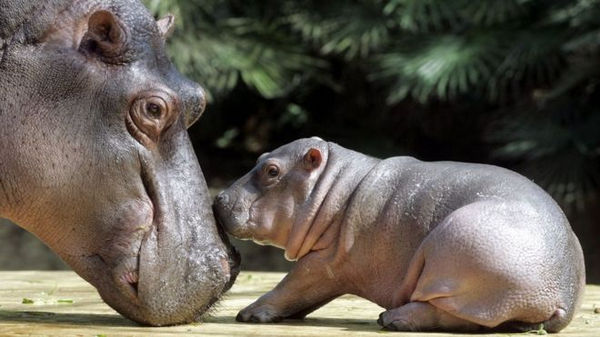

Hà mã (Hippopotamus amphibius) là một loài động vật có vú ăn cỏ lớn sống ở châu Phi Hạ
Sahara, và là một trong hai loài còn sinh tồn của Họ Hà mã (Hippopotamidae); loài còn lại là hà mã lùn.
Đây là một trong những loài thú có vú trên cạn lớn nhất và là động vật móng guốc chẵn nặng nhất, dù thấp
hơn nhiều so với hươu cao cổ.
"Hà mã" là phiên âm Hán-Việt của chữ Hán 河馬. Đây là cách dịch nghĩa của từ Hy Lạp ἱπποπόταμος,
hippopotamos - gồm ἵππος, hippos nghĩa là "ngựa", và ποταμός, potamos nghĩa là "sông" - mang nghĩa "ngựa
sông".
Hà mã là loài sống nửa ở nước nửa trên cạn, cư trú ở các con sông, hồ và các đầm lầy rừng ngập mặn Tây
Phi nơi những con đực chiếm lĩnh một đoạn sông và đứng đầu đàn gồm 5 đến 30 con cái và con non. Vào ban
ngày, chúng duy trì sự mát mẻ bằng cách đầm mình trong nước hay bùn; và sự sinh sản cũng diễn ra trong
nước. Chúng lên bờ vào ban đêm để ăn cỏ. Mặc dù các con hà mã nghỉ ngơi gần nhau trong nước, thì việc
kiếm ăn lại là hoạt động đơn lẻ và không mang tính lãnh thổ.
Dù có sự tương đồng về cơ thể với lợn và các loài guốc chẵn trên cạn khác, chúng lại có họ hàng gần nhất
là cá voi và cá heo, nhóm mà đã tách ra vào khoảng 55 triệu năm trước.Tổ tiên chung của cá voi và hà
mã rẽ nhánh từ những động vật guốc chẵn khác vào khoảng 60 triệu năm về trước.Hóa thạch hà mã sớm
nhất được biết đến thuộc về chi Kenyapotamus ở châu Phi, có niên đại khoảng 16 triệu năm trước đây.